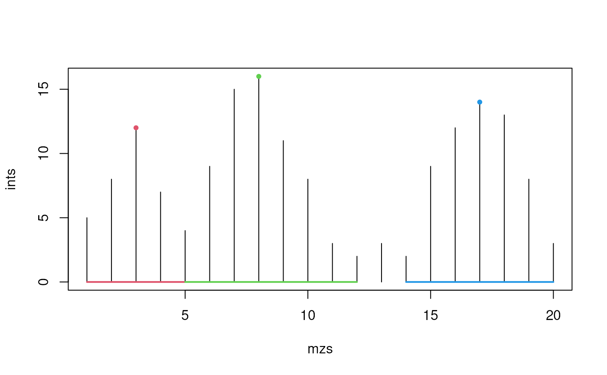

This function finds the valleys around peaks.
valleys(x, p)
| x |
|
|---|---|
| p |
|
A matrix with three columns representing the index of the left
valley, the peak centroid, and the right valley.
The detection of the valleys is based on localMaxima. It returns the
first occurence of a local maximum (in this specific case the minimum).
For plateaus, e.g. c(0, 0, 0, 1:3, 2:1, 0) this results in a wrongly
reported left valley index of 1 (instead of 3, see the example section as
well). In real data this should not be a real problem.
x[x == min(x)] <- Inf could be used before running valleys to circumvent
this specific problem but it is not really tested and could cause different
problems.
Other extreme value functions:
.peakRegionMask(),
localMaxima(),
refineCentroids()
Sebastian Gibb
ints <- c(5, 8, 12, 7, 4, 9, 15, 16, 11, 8, 3, 2, 3, 2, 9, 12, 14, 13, 8, 3) mzs <- seq_along(ints) peaks <- which(localMaxima(ints, hws = 3)) cols <- seq_along(peaks) + 1 plot(mzs, ints, type = "h", ylim = c(0, 16))## Known limitations for plateaus y <- c(0, 0, 0, 0, 0, 1:5, 4:1, 0) valleys(y, 10L) # left should be 5 here but is 1#> left centroid right #> [1,] 1 10 15#> left centroid right #> [1,] 6 10 14